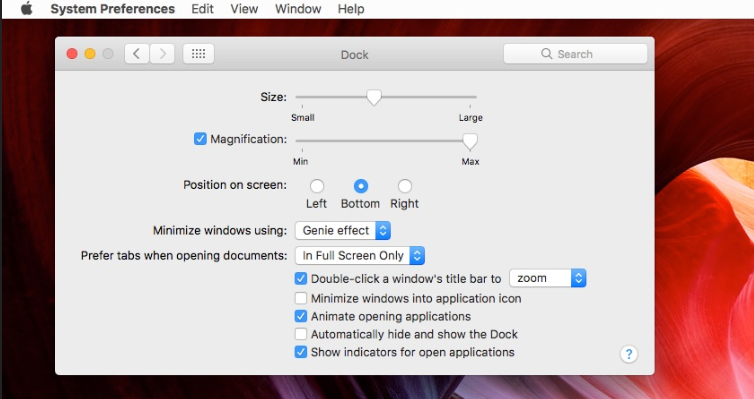

Cómo Personalizar Tu Mac Más de 4 Formas Geniales de Hacerlo Rápidamente
Durante años, Apple ha evolucionado hacia una interfaz de usuario cada vez más minimalista. De forma inata, macOS funciona especialmente bien, pero podría hacer uso de algunas modificaciones. Personalizando algunos ajustes puedes hacer que macOS te funcione incluso mejor.
Si te estás preguntando si hay formas geniales de personalizar tu macOS, entonces este es el artículo en el que te debes sumergir. Puedes modificar rápidamente el aspecto y la sensación que transmite tu Mac. Aprende a modificar tu Mac, ajustando sus preferencias a tu gusto personal.
Cómo Personalizar Rápidamente la Apariencia de Tu Mac
Es buena idea personalizar un Mac, para hacerlo tuyo. Incluso existen sitios web dedicados por completo a tematizar Macs. En lugar de usar herramientas de terceros para obtener distintas apariencias, te mostraré lo que Apple ya proporciona.
En este tutorial, estaré usando la versión actual del sistema operativo, macOS 10.12 Sierra. Encontrarás que los principios son los mismos para cualquier versión que estés usando, aunque con ligeras diferencias. Ahora juguemos con algunas estupendas formas de personalizar la configuración visual del Mac.
1. Modifica Automáticamente el Salvapantallas Cada Pocas Horas, o Días
Cuando se trata de metáforas sobre ordenadores, siempre he luchado con el concepto de poner un salvapantallas en el escritorio. Supongo que cambiar el mantel de casa no tiene el mismo efecto.
Para cambiar el salvapantallas (o mantel), dirígete a las Preferencias del Sistema > Escritorio y Salvapantallas. También puedes llegar al mismo sitio pulsando el símbolo de Apple, , en la parte superior izquierda de la barra de menús, o pulsando Comando/Espacio para abrir Spotlight e introducir Escritorio para encontrar las preferencias.
Una vez hayas seleccionado una imagen de salvapantallas, tendrás la opción de cambiarla automáticamente. También puedes configurar la frecuencia con la que cambiará. Pulsa sobre la casilla para colocar una marca en el cajetín Cambiar Imagen: y usa el menú desplegable para seleccionar el intervalo deseado.
Si lo prefieres, es posible hacer que las imágenes del fondo del escritorio se muestren en un orden aleatorio. Pulsa la marca de la caja para activar el Orden Aleatorio.
Para mantener las cosas organizadas, usa una carpeta específica en iPhoto para guardar las imágenes del fondo del escritorio. El panel Escritorio y Salvapantallas siempre se mantiene actualizado, así que no tendrás que preocuparte de añadir una nueva imagen cuando la descargues.
Por otro lado, puedes usar cualquier carpeta del Mac, mientras contenga más de una imagen.
2. Usa Esquinas Activas para Mostrar los Salvapantallas y Otras Cosas
Desde el panel de preferencias Escritorio y Salvapantallas, pulsa la pestaña Salvapantallas para ver las opciones para los mismos. Abajo a la derecha hay un botón llamado Esquinas Activas…
Las Esquinas Activas es una característica de sistema de macOS que te permite usar las cuatro esquinas de la pantalla para invocar ciertas acciones, tal y como indica su denominación. Podría ser para lanzar un salvapantallas, abrir LaunchPad, el Centro de Notificaciones o cualquier otra cosa.
Mueve el ratón a la esquina definida para activar la característica.
3. Añadir Separadores al Dock

El dock de tu Mac puede acabar abarrotado con multitud de iconos de aplicaciones. Si te sucede esto, añadir un espacio entre los iconos tiene sentido.
Los espaciadores que añade este comando son "azulejos" invisibles que pueden eliminarse con facilidad , si fuese necesario, arrastrándolos desde el dock hacia afuera.
Para habilitar el azulejo vacío, abre el Terminal e introduce el siguiente comando:
defaults write com.apple.dock persistent-apps -array-add '{"tile-type"="spacer-tile";}'; killall Dock
Una vez el comando ha sido ejecutado, el dock desaparecerá un momento y se cargará de nuevo con un azulejo invisible para crear el espacio.El azulejo invisible puede ser arrastrado a lo largo del dock para situarlo donde necesites crear un mayor espacio entre iconos, o arrastrarlo desde el dock al escritorio para eliminarlo si es que ya no lo necesitas.
4. Cambia el Esquema de Color del Sistema del macOSh1
Si prefieres destacar el texto para que tenga otro color distinto al azul predeterminado, abre las Preferencias del Sistema > General y cambia Color de Realce: a otro color.
Junto con los ocho colores del menú, puedes usar la opción Otros… para seleccionar cualquier color desde el selector.
Existe aquí otra opción de Apariencia que cambia los botones, los menús, y las ventanas de todas las aplicaciones a una opción más monócroma llamada Grafito. Azul y grafito son las únicas opciones, así que si te gusta una apariencia muy dura y sin esos coloridos botones para cerrar, minimizar y aumentar situados en las barras de las ventanas, serán tus opciones preferidas.
5. Añadir Ampliación al Dock, Ocultarlo y Cambiar su Posición
De forma predeterminada, el dock del Mac no salta como puede que hayas visto en otros Macs. Eso es porque no está habilitado el aumento.
Para habilitarlo, pulsa el símbolo de Apple, , en la parte superior izquierda de la barra de menús, selecciona Dock, y pulsa Activar Ampliación.